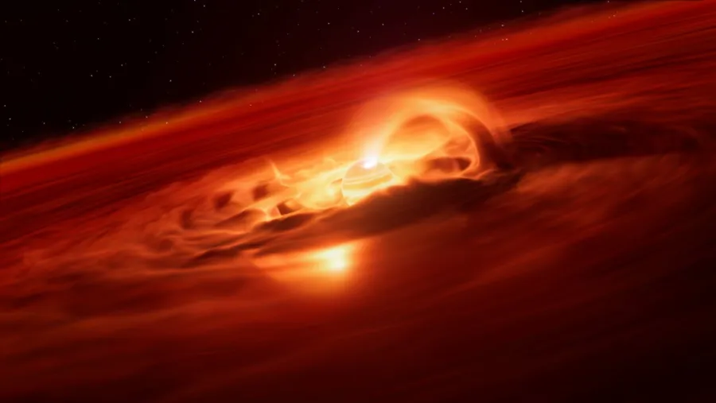

October 2, 2025
Cha 1107-7626: free-floating planet growing at a record rate
Cha 1107-7626 does not orbit a star but floats freely through space. The object, with five to ten Jupiter masses, is about 620 light-years away, still forming and surrounded by a disk of gas and dust.
Observations with ESO's Very Large Telescope showed that in August 2025 it was taking up about six billion tonnes of matter per second – about eight times as much as a few months earlier. It is the highest growth rate ever measured for a planetary-mass object. Magnetic activity appears to have played a role, something previously known only from stars.
Source: ESO: "Six billion tonnes a second: Rogue planet found growing at record rate.", 2025-10-02